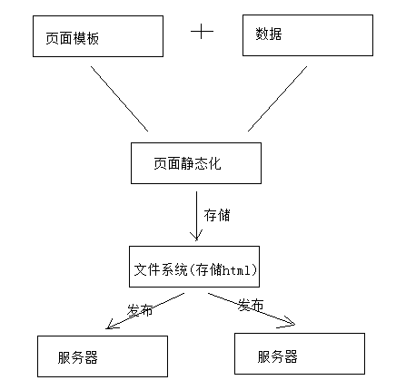

页面静态化 页面预览
1 页面静态化需求
1、为什么要进行页面管理？
本项目cms系统的功能就是根据运营需要，对门户等子系统的部分页面进行管理，从而实现快速根据用户需求修改页面内容并上线的需求。
2、如何修改页面的内容？
在开发中修改页面内容是需要人工编写html及JS文件，CMS系统是通过程序自动化的对页面内容进行修改，通过页面静态化技术生成html页面。
3、如何对页面进行静态化？
一个页面等于模板加数据，在添加页面的时候我们选择了页面的模板。
页面静态化就是将页面模板和数据通过技术手段将二者合二为一，生成一个html网页文件。
4、页面静态化及页面发布流程图如下：

业务流程如下：
1、获取模型数据
2、制作模板
3、对页面进行静态化
4、将静态化生成的html页面存放文件系统中
5、将存放在文件系统的html文件发布到服务器
2 FreeMarker 研究
参考“学成在线-freemarker.pdf”
3 页面静态化
3.1 页面静态化流程
通过上边对FreeMarker的研究我们得出：模板+数据模型=输出，页面静态化需要准备数据模型和模板，先知道数据模型的结构才可以编写模板，因为在模板中要引用数据模型中的数据，本节将系统讲解CMS页面数据模型获取、模板管理及静态化的过程。
下边讨论一个问题：如何获取页面的数据模型？
CMS管理了各种页面，CMS对页面进行静态化时需要数据模型，但是CMS并不知道每个页面的数据模型的具体内容，它只管执行静态化程序便可对页面进行静态化，所以CMS静态化程序需要通过一种通用的方法来获取数据模型。
在编辑页面信息时指定一个DataUrl，此DataUrl便是获取数据模型的Url，它基于Http方式，CMS对页面进行静态化时会从页面信息中读取DataUrl，通过Http远程调用的方法请求DataUrl获取数据模型。
管理员怎么知道DataUrl的内容呢？
举例说明：
此页面是轮播图页面，它的DataUrl由开发轮播图管理的程序员提供。
此页面是精品课程推荐页面，它的DataUrl由精品课程推荐的程序员提供。
此页面是课程详情页面，它的DataUrl由课程管理的程序员提供。
页面静态化流程如下图：
1、静态化程序首先读取页面获取DataUrl。
2、静态化程序远程请求DataUrl得到数据模型。
3、获取页面模板。
4、执行页面静态化。

3.2 数据模型
3.2.1 轮播图DataUrl接口
3.2.1.1 需求分析
CMS中有轮播图管理、精品课程推荐的功能，以轮播图管理为例说明：轮播图管理是通过可视化的操作界面由管理员指定轮播图图片地址，最后将轮播图图片地址保存在cms_config集合中，下边是轮播图数据模型：
针对首页的轮播图信息、精品推荐等信息的获取统一提供一个Url供静态化程序调用，这样我们就知道了轮播图页面、精品课程推荐页面的DataUrl，管理在页面配置中将此Url配置在页面信息中。
本小节开发一个查询轮播图、精品推荐信息的接口，此接口供静态化程序调用获取数据模型。
3.2.1.2 接口定义
轮播图信息、精品推荐等信息存储在MongoDB的cms_config集合中。
cms_config有固定的数据结构，如下：
1 | @Data |
数据模型项目内容如下：
1 | @Data |
上边的模型结构可以对照cms_config中的数据进行分析。
其中，在mapValue 中可以存储一些复杂的数据模型内容。
根据配置信息Id查询配置信息，定义接口如下：
1 | @Api(value="cms配置管理接口",description = "cms配置管理接口，提供数据模型的管理、查询接口") |
3.2.1.3 Dao
定义CmsConfig的dao接口：
1 | public interface CmsConfigRepository extends MongoRepository<CmsConfig,String> { |
3.2.1.4 Service
定义CmsConfigService实现根据id查询CmsConfig信息。
1 | @Service |
3.2.1.5 Controller
1 | @RestController |
3.2.1.6 测试
使用postman测试接口：
get请求：http://localhost:31001/cms/config/getmodel/5a791725dd573c3574ee333f （轮播图信息）
3.2.3 远程请求接口
SpringMVC提供 RestTemplate请求http接口，RestTemplate的底层可以使用第三方的http客户端工具实现http 的请求，常用的http客户端工具有Apache HttpClient、OkHttpClient等，本项目使用OkHttpClient完成http请求，原因也是因为它的性能比较出众。
1、添加依赖
1 | <dependency> |
2、配置RestTemplate
在SpringBoot启动类中配置 RestTemplate
1 | public class ManageCmsApplication { |
3、测试RestTemplate
根据url获取数据，并转为map格式。
1 | @Test |
3.3 模板管理
3.3.1 模板管理业务流程
CMS提供模板管理功能，业务流程如下：

1、要增加新模板首先需要制作模板，模板的内容就是Freemarker ftl模板内容。
2、通过模板管理模块功能新增模板、修改模板、删除模板。
3、模板信息存储在MongoDB数据库，其中模板信息存储在cms_template集合中，模板文件存储在GridFS文件系统中。
cms_template集合：
下边是一个模板的例子：
1 | { |
上边模板信息中templateFileId是模板文件的ID，此ID对应GridFS文件系统中文件ID。
3.3.2 模板制作
3.3.2.1 编写模板文件
1、轮播图页面原型
在门户的静态工程目录有轮播图的静态页面，路径是：/include/index_banner.html。
1 | <!DOCTYPE html> |
2、数据模型为：
通过http 获取到数据模型如下：
下图数据模型的图片路径改成可以浏览的正确路径。
1 | { |
3、编写模板
在freemarker测试工程中新建模板index_banner.ftl。
1 | <!DOCTYPE html> |
3.3.2.2 模板测试
在freemarker测试工程编写一个方法测试轮播图模板，代码如下：
1 | @Autowired |
请求：http://localhost:8088/freemarker/banner
3.3.3 GridFS研究
3.3.3.1 GridFS介绍
GridFS是MongoDB提供的用于持久化存储文件的模块，CMS使用MongoDB存储数据，使用GridFS可以快速集成开发。
它的工作原理是：
在GridFS存储文件是将文件分块存储，文件会按照256KB的大小分割成多个块进行存储，GridFS使用两个集合（collection）存储文件，一个集合是chunks, 用于存储文件的二进制数据；一个集合是files，用于存储文件的元数据信息（文件名称、块大小、上传时间等信息）。
从GridFS中读取文件要对文件的各各块进行组装、合并。
详细参考：https://docs.mongodb.com/manual/core/gridfs/
3.3.3.2 GridFS存取文件测试
1、存文件
使用GridFsTemplate存储文件测试代码：
向测试程序注入GridFsTemplate。
1 | @Test |
存储原理说明：
文件存储成功得到一个文件id
此文件id是fs.files集合中的主键。
可以通过文件id查询fs.chunks表中的记录，得到文件的内容。
2、读取文件
1）在config包中定义Mongodb的配置类，如下：
GridFSBucket用于打开下载流对象
1 | @Configuration |
2）测试代码如下
1 | @SpringBootTest |
3、删除文件
1 | //删除文件 |
3.3.4 模板存储
根据模板管理的流程，最终将模板信息存储到MongoDB的cms_template中，将模板文件存储到GridFS中。
模板管理功能在课堂中不再讲解，教学中手动向cms_template及GridFS中存储模板，方法如下：
1、添加模板
1）使用GridFS测试代码存储模板文件到GridFS，并得到文件id.
2）向cms_template添加记录。
2、删除模板
1）使用GridFS测试代码根据文件id删除模板文件。
2）根据模板id删除cms_template中的记录。
3、修改模板信息
使用Studio 3T修改cms_template中的记录。
4、修改模板文件
1）通过Studio 3T修改模板文件(此方法限文件小于256K)
可以通过Studio 3T修改模板文件，先找到模板文件，再导入进去：
3.4 静态化测试
上边章节完成了数据模型和模板管理的测试，下边测试整个页面静态化的流程，流程如下：
1、填写页面DataUrl
在编辑cms页面信息界面填写DataUrl，将此字段保存到cms_page集合中。
2、静态化程序获取页面的DataUrl
3、静态化程序远程请求DataUrl获取数据模型。
4、静态化程序获取页面的模板信息
5、执行页面静态化
3.4.1 填写页面DataUrl
修改页面管理模板代码，实现编辑页面DataUrl。
注意：此地址由程序员提供给系统管理员，由系统管理员录入到系统中。
下边实现页面修改界面录入DataUrl：
1、修改页面管理前端的page_edit.vue
在表单中添加dataUrl输入框：
1 | <el-form-item label="数据Url" prop="dataUrl"> |
2、修改页面管理服务端PageService
在更新cmsPage数据代码中添加：
1 | //更新dataUrl |
3.4.2 静态化程序
在PageService中定义页面静态化方法，如下：
1 | //页面静态化 |
单元测试getPageHtml方法，过程略。
4 页面预览
4.1 页面预览开发
4.1.1 需求分析
页面在发布前增加页面预览的步骤，方便用户检查页面内容是否正确。页面预览的流程如下：
1、用户进入cms前端，点击“页面预览”在浏览器请求cms页面预览链接。
2、cms根据页面id查询DataUrl并远程请求DataUrl获取数据模型。
3、cms根据页面id查询页面模板内容
4、cms执行页面静态化。
5、cms将静态化内容响应给浏览器。
6、在浏览器展示页面内容，实现页面预览的功能。
4.1.2 搭建环境
在cms服务需要集成freemarker：
1、在CMS服务中加入freemarker的依赖
1 | <dependency> |
2、在application.yml配置freemarker
1 | spring: |
4.1.3 Service
静态化方法在静态化测试章节已经实现。
4.1.4 Controller
调用service的静态化方法，将静态化内容通过response输出到浏览器显示
创建CmsPagePreviewController类，用于页面预览：
请求页面id，查询得到页面的模板信息、数据模型url，根据模板和数据生成静态化内容，并输出到浏览器。
1 | @Controller |
4.2 页面预览测试
4.2.1 配置Nginx代理
为了通过nginx请求静态资源（css、图片等），通过nginx代理进行页面预览。
1 | #页面预览 |
配置cms_server_pool将请求转发到cms：
1 | #cms页面预览 |
重新加载nginx 配置文件。
从cms_page找一个页面进行测试。注意：页面配置一定要正确，需设置正确的模板id和dataUrl。
在浏览器打开：http://www.xuecheng.com/cms/preview/5a795ac7dd573c04508f3a56
5a795ac7dd573c04508f3a56：轮播图页面的id
4.2.2 添加“页面预览”链接
在页面列表添加“页面预览”链接，修改page_list.vue:
1 | <template slot-scope="page"> |
添加preview方法：
1 | //页面预览 |
效果：
点击轮播图页面的“页面预览”，预览页面效果。